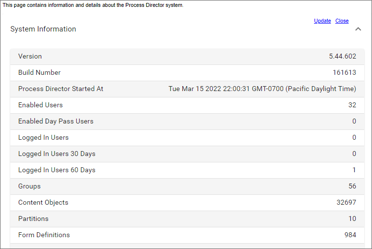

The System Information page displays information regarding the number of objects and users on this installation of Process Director, characteristics of the hard drive that Process Director is installed on, and licensing information.
Process Director v5.44.602 and higher also has an updated version of this page with a more modern look.
